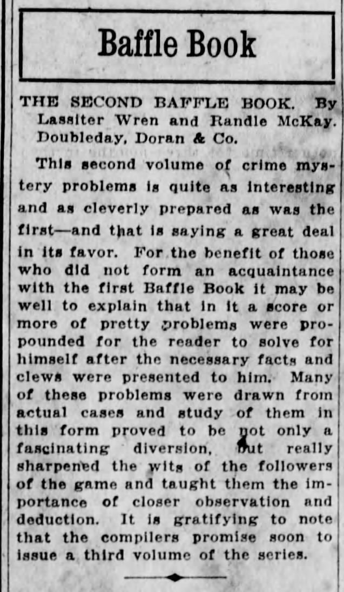
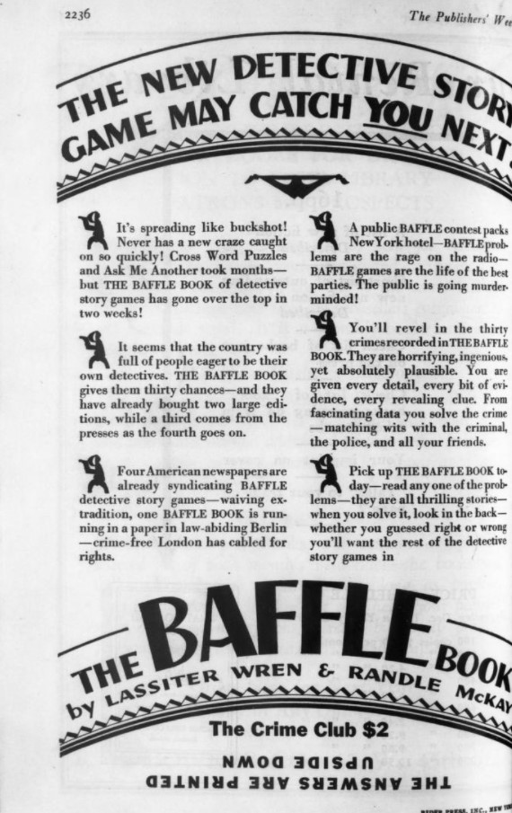
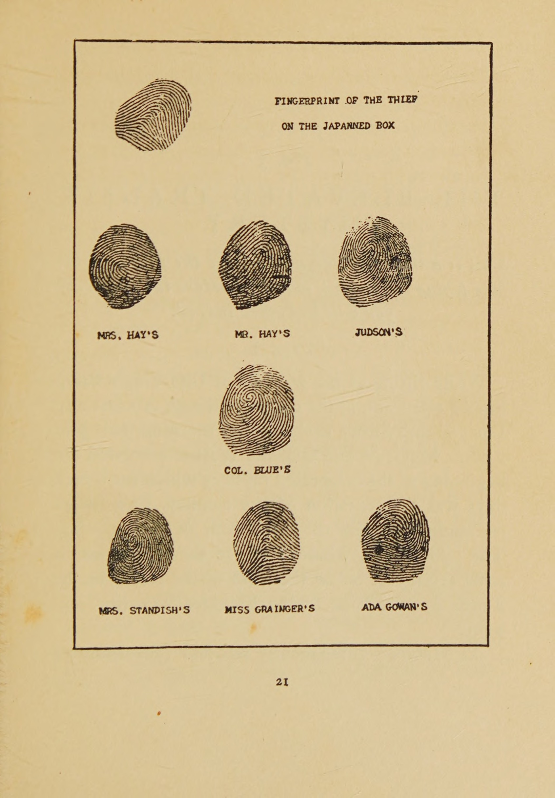
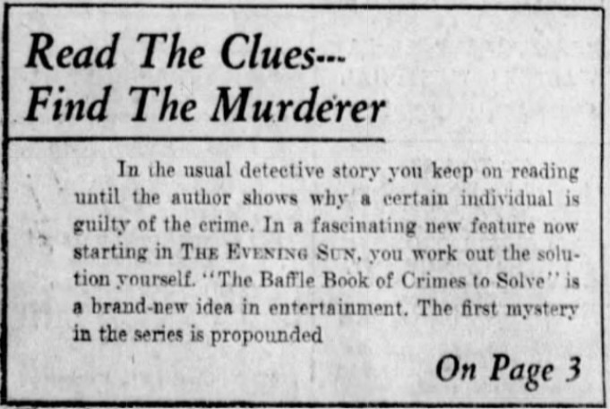

Mystery Puzzle History · November 1928 · The Early Golden Age
A Baffle Book Doth Make Sherlocks of Us All

The Second Baffle Book (The Crime Club, New York, 1929).
On 24 November 1928, a full page in The Publishers Weekly shouted across the top: "THE NEW DETECTIVE STORY GAME MAY CATCH YOU NEXT!" Underneath, a little silhouetted detective points at each paragraph in turn. "It's spreading like buckshot!" it says. "Cross Word Puzzles and Ask Me Another took months — but THE BAFFLE BOOK of detective story games has gone over the top in two weeks!" And at the bottom, the last line is printed upside down: The answers are printed upside down.

Doubleday, Doran's full page in The Publishers Weekly, 24 November 1928, p. 1903. The last line is printed upside down.
"Detective Story Game." That is the first time we have found the book trade using a name that sounds this much like our hobby. The Baffle Book even keeps score!
The Baffle Book came out of New York parties. By its own account, the authors made the game up "to amuse studio gatherings in New York last winter," where it went by names like "Clues" or "Baffling Mysteries." It was popular enough to become a book.
The Crime Club, the mystery imprint of Doubleday, Doran & Company, published it in the autumn of 1928: 280 pages, thirty mysteries, $1.90 (the trade ad rounded it to two dollars). The authors were Lassiter Wren and Randle McKay. Both are pen names. McKay was Richard Wilmer Rowan (born in Philadelphia in 1894, died 1964). Rowan wrote about spies for a living. The baffles are full of fingerprints, handwriting specimens and observation tests. His Spy and Counter-Spy, a history of modern espionage, came out from Viking in 1928, the same year as The Baffle Book. Wren's modern publisher names him as John T. Colter, and says little else is known about him. We have looked, and outside that one line the man leaves no trace we can find.
Their ad copy called Wren and McKay the originators of the "Detective Problem Form." We disagree. They were among the first — and perhaps the first to formalize it as such — but Poe gave readers a cipher in 1843, Carr asked readers to solve before the answer in 1926, and Cipher Stories beat Baffle to the shops by months.
What is a baffle, anyway?
A baffle is a short crime story you are meant to solve. The baffle provides the evidence, and you get to try to solve it before you turn to the answers. It is a mystery delivered as evidence, not just as prose. For example, you are given a floor plan, footprints, a torn note in two fragments, a map with the zones of suspicion ringed in dots. Or, early in the first book, a full plate of fingerprints: The Evidence on the Japanned Box, the thief's print set above the prints of seven named suspects (Mrs. Hay's, Mr. Hay's, Judson's, Colonel Blue's, and the rest). You are being handed the case the way the police got it.

"The Evidence on the Japanned Box," The Baffle Book (1928), p. 21: the thief's print above the prints of seven suspects.
The book promises to play fair. Every clue you need is on the page, and if the police establish a fact, it is a fact. At the end of each case you are given several questions to answer. Each question is worth a set amount of points. Then you turn the book upside down to read the answers in the back (printed this way so that you don't see an answer by accident).
You can play alone, against a friend, or at a party. The book prints rules for two teams, and recommends that each team buy its own copy.
The craze
The baffles did not stay bound in their book. Within weeks of publication, they were everywhere a 1928 puzzle could go.
That October, WGN Radio began "Baffle Contests" at 8:30 in the evening: a mystery read on the air, and the first five listeners to mail in the right answer won a copy of the book. By 5 November, The Brooklyn Citizen was advertising a radio Baffle Contest of its own.
The Morning Post in Camden ran what reads like a personal review: "I was stumped on the first one." The same wording turns up in other papers, so it was almost certainly Doubleday's ad copy. In Baltimore, The Evening Sun promised "BE YOUR OWN DETECTIVE": a new mystery every weekday, all five answers on Saturday, "a splendid one for the family circle." The Montclair Times wondered if it was a craze.

The Evening Sun (Baltimore) teases its weekday Baffle serial, November 1928: "Be Your Own Detective."
And Doubleday's syndicate bragged to Editor & Publisher that Baffle had "swept into immediate popularity less than ten days after publication." The New York Evening World ran "Problems from the Baffle Book" daily. London and Boston had picked it up, Berlin was "about to start it," translations into six languages were "under way," "Baffle Parties have become popular," and the second book was already in preparation. "Baffles are with us to stay."
While some of that is true, some of it was just hype. We can find no foreign-language edition of the Baffle Book in any catalogue, and no record of the Berlin run. The six translations seem to have never happened. London did pick it up, two years later (see below). The rest of it was real. Newspapers ran the baffles as a serial. Radio stations ran contests. People played them at parties.
The London edition
Two years later, Heinemann published it in London in 1930 as The Baffle Book: A Parlour Game of Mystery and Detection, anglicised by F. Tennyson Jesse (novelist, true-crime writer, great-niece of Tennyson). Jesse cut it to twenty-eight problems and introduced it this way: "The Baffle Book is not a collection of short stories. It is a parlour game, and a very good game, too." She made no claim that it originated anything, just that it was a very good game.
1929
In March, The Haverfordian, Haverford College's student magazine, put out a Grand Guignol issue. It included a Carr problem, and the editors explained themselves first. "Believing that the average reader is at least one-eighth amateur-detective," they pointed out that "now that such things as 'The Baffle Book' have become the rage, and murder-games are a popular indoor sport," they had run a similar game back in 1926, and "will not, therefore, be accused of imitating a fad."
This provides us strong evidence that many people were well aware of the Baffle Books.
In May, Photoplay toured Pickfair, the home of Douglas Fairbanks and Mary Pickford, and listed the books on their shelves. The Baffle Book was one of them. By July, The Publishers Weekly was grouping the coming second Baffle with new game books on anagrams, bridge and crosswords: game books were their own category now. From September 1929, “Baffles” ran as a regular feature in the pulp Clues Detective Stories, the answers printed in later issues. It ran into January 1930, came back that December, and ran into January 1931. The magazine ran it as a contest and printed the winners’ names in May 1930. A reader in Maywood, Illinois, wrote in that first December: “I like the Baffles. They are very interesting to read.”
The Second Baffle Book came out on 18 October 1929, and reviews followed within days. The Cincinnati Enquirer found it "quite as interesting and as cleverly prepared as was the first," and passed along the news that "the compilers promise soon to issue a third volume."
The books that came after
The scholar Maurizio Ascari, writing in Studies in Crime Writing in 2023, traces a line from 1936 to the fingerprint plate in The Baffle Book, and from there to Cluedo. In 1936, Dennis Wheatley's Murder Off Miami and the dossier games that followed took the casefile of clues (telegrams, photographs, physical evidence) and, in his words, went "a step further than The Baffle Book." In 1937 Parker Brothers published The Jury Box, which seated the players as jurors over six casefiles.
When American Mystery Classics reissued The Baffle Book in March 2026, the introduction came from G. T. Karber (the creator of Murdle). A caution about editions: the Godine reprints of 2006 and 2008, which kept these books reachable for years, are selections of fifteen puzzles each. The 2026 edition is the one that restores all thirty baffles.
After the Crime Club
The third volume came out as promised: The Third Baffle Book arrived in time for Christmas 1930, at one dollar (about half the price of the first). The Crime Club line stops there, but the pair didn't. In March 1933, Wren and McKay published once more, from a new house: The Mystery Puzzle Book (Thomas Y. Crowell), with a foreword by S. S. Van Dine. The Saturday Review graded it "Good," and noted that amateur handwriting experts would have the most fun with it. After that we find nothing more from them.
In 1931–32 the Mystery League (a cheap imprint sold at cigar stores and drugstores for a quarter) ran three promotional "Baffle Cases" in the backs of its novels, original mysteries by Wren and McKay, solutions mailed in for a prize awarded in gold. A copy of Murder in the French Room (1931) carries Case #2, "The Crime at Laurel Lodge," under both their names. Only the first case's solution was ever printed; for Cases #2 and #3 the results were mailed privately to entrants, and the imprint folded around 1933. So the last baffles may have been answered by people whose letters no longer exist. If you own one of those mailed solutions, we would love to hear from you.
When the 1928 copyright came up for renewal in 1955, Rowan renewed it himself, under the title The Baffle Book of Crimes to Solve. Wren did not appear in the renewal at all. His one other book was Masterstrokes of Crime Detection, a solo true-crime collection from 1929.
Can you beat 42.62%?
So, nearly a century on, can you still play it? We did. We worked through the first book the slow way: five or six hours spread over many days, two or three baffles at a sitting, pencil, score sheet, book turned upside down at the back like everyone in 1928.
Our final score was 42.62%, and we were rather proud of it. Some cases are harder now than they were then, because they lean on things every reader in 1928 would have known. The slogan in the ad was right, though. A Baffle Book doth make Sherlocks of us all.
One person, at least, thinks 42.62% is beatable. A mystery-loving parent saw the book over our shoulder, was hooked at once — and wants to beat our score.
The Early Golden Age
This feature belongs to our Mystery Puzzle History series. The full timeline, from Poe in 1843 to the Photocrimes of the 1940s, lives on the series overview page.
Sources
Wren, L., & McKay, R. (1928). The Baffle Book. New York: The Crime Club / Doubleday, Doran & Co. Also: The Second Baffle Book (1929); The Third Baffle Book (1930); The Mystery Puzzle Book (New York: Thomas Y. Crowell, 1933).
The Publishers Weekly, 24 November 1928, p. 1903 (Doubleday, Doran full-page advertisement).
Editor & Publisher, 27 October 1928 (Doubleday syndicate article on the Baffle serial and contests).
The Evening Sun (Baltimore), November 1928 ("Be Your Own Detective" weekday serial and teaser).
The Brooklyn Citizen, 5 November 1928 (radio Baffle Contest advertisement).
Morning Post (Camden, N.J.), 1928; The Montclair Times, 1928 (newspaper notices).
The Haverfordian, March 1929 (Grand Guignol issue, editors' note).
FictionMags Index, contents lists for Clues and Clues Detective Stories, 1929–1931 (the “Baffles” installments, answers, and contest winners), and the Second December 1929 issue, Internet Archive.
Photoplay, May 1929 (Pickfair bookshelf tour).
The Cincinnati Enquirer, 20 October 1929 (review of The Second Baffle Book).
Wren, L., & McKay, R. (1930). The Baffle Book: A Parlour Game of Mystery and Detection. Ed. F. Tennyson Jesse. London: William Heinemann.
The Saturday Review, "Guide to Detective Fiction," 20 May 1933 (notice of The Mystery Puzzle Book).
U.S. Catalog of Copyright Entries, Renewals: The Baffle Book, renewal R159453 (1955), Richard Wilmer Rowan.
Hubin, A. J. Crime Fiction IV (McKay identified as Richard Wilmer Rowan, 1894–1964).
Guide to the Richard Wilmer Rowan Papers, 1910–1987 (MC 95), University of New Hampshire Library.
Edwards, M. (2017). The Story of Classic Crime in 100 Books. London: British Library. (British edition and Jesse introduction.)
Ascari, M. (2023). "The Murder Game: De-Realization and the Uncanny in Golden Age Detective Fiction." Studies in Crime Writing, Issue 4, pp. 1–11.
Between the Covers (ABAA), catalogue description of Murder in the French Room (Mystery League #21, 1931), carrying Baffle Case #2, "The Crime at Laurel Lodge."
Karber, G. T. (2026). "An Almost Forgotten Classic: How The Baffle Book Influenced Modern Mysteries." CrimeReads, March 2026; and his introduction to the American Mystery Classics edition (2026).
Credits. Researched and compiled for Brent A. Price, The Voynich Times. Play-through and score by Brent A. Price.
Images.The Second Baffle Book cover and the 1928 advertisements are scans from Brent's collection (2021). The fingerprint plate is from The Baffle Book (1928), page images via HathiTrust / Internet Archive. The 1928 and 1929 Baffle Books are in the U.S. public domain.